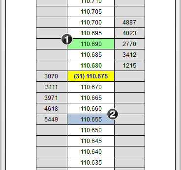

|
<< Click to Display Table of Contents >> Price Ladder Display |


|
Price Ladder Display
|
<< Click to Display Table of Contents >> Price Ladder Display |
|
The SuperDOM is designed to allow the trader to view market prices, market depth, current inside market, indicator price levels, PnL, current positions, and pending orders at a glance. The unique display of each item within the SuperDOM Price Ladder display makes managing open orders and positions easy and efficient.
To open the SuperDOM Window, select the New menu from the NinjaTrader Control Center. Then left mouse click on the menu item SuperDOM (Static) or SuperDOM (Dynamic) (Please see Static vs Dynamic Price Ladder Display for more information)
 Understanding the function of each column in the Price Ladder display
Understanding the function of each column in the Price Ladder display
The price ladder is broken down into three functional columns by default, and can be extended to display any number of additional custom columns.
Buy ColumnThe left column is the Buy
•Submit buy orders •Modify buy orders •Display the total contracts on the bid at their respective prices (also known as market depth)
Price ColumnThe center column, known as the Price
•Modify stop loss and profit target orders •Display market prices •Display the current bid, ask, and last traded prices •Display indicator price levels
Sell ColumnThe right column is the Sell column which is used to:
•Submit sell orders •Modify sell orders •Display the total contracts on the ask at their respective prices (also known as market depth)
ColumnsYou can optionally configure additional Columns
•APQ (Approximate Position in Queue) •Notes •PnL •Volume
Please see our Help Topic on Understanding SuperDOM Columns for more information. |
 Understanding how market data is displayed
Understanding how market data is displayed
The Price Ladder display section of the SuperDOM displays the current inside market and market depth. Various aspects of this display can be user defined in the SuperDOM Properties window.
The following market depth items can be displayed:
1.Bid Depth 2.Ask Depth 3.Best Bid 4.Best Ask
Last traded price and size (yellow cell in the image below)
|
 How to use the quick buttons at the bottom of the Price Ladder display
How to use the quick buttons at the bottom of the Price Ladder display
The bottom row of the price ladder contains three functions: Buy Market, PnL, and Sell Market.
Market (left cell)Submits buy market, limit at ask, or limit at bid orders
PnL (center cell)Displays unrealized profit or loss for the current position
Market (right cell)Submits sell market, limit at ask, or limit at bid orders
You can change the type of order the MARKET cells submit by holding down the SHIFT key to place limit orders at the ask, or by holding down the CTRL key to place limit orders at the bid. Clicking with your left mouse button on the PnL cell will change the display between points, ticks, currency, percent and pips. |
 How to display the daily high and low prices
How to display the daily high and low prices
Daily High and LowThe market's daily high
•Right click on the SuperDOM, select Properties, check Show daily high/low markers
You can further customize the color of the markers in the SuperDOM Properties dialog window.

|
 Understanding how position and profit & loss information is displayed
Understanding how position and profit & loss information is displayed
PnL Display The PnL field in the bottom of the Price column will show the current unrealized profit/loss for your current open position, and read as PnL when you are FLAT.
You can optionally enable "Show PnL when flat" in the SuperDOM Properties to view your daily account PnL when FLAT
Current Position DisplayThe cell between the CLOSE button and the REV button will tell you your current position.
When long the field will show as green and list the number of contracts, and when short field will show as red and list the number of contracts. When you do not have an open position the field will say FLAT. |
 How to adjust the Price Ladder display
How to adjust the Price Ladder display
Adjusting the Price Ladder display Move your cursor into the Price Ladder region and use your mouse scroll wheel to adjust market prices up or down.
You can also left mouse click on the "C" button at any time to center the inside market.
Optionally, the Auto Center property will automatically center the inside market price should the last traded price trade outside the visible range on the Price Ladder. You can enable or disable Auto Center at any time by clicking on your right mouse button in the border of the SuperDOM and selecting the menu name Auto Center.
Number of Visible Price RowsThe number of price rows will be dynamically adjusted by vertically re-sizing the SuperDOM window. The larger the size of the SuperDOM window, the more price levels will be added in automatically.
This achieved in the same manner you would use to resize any other sort of general application window, by moving your mouse cursor to the edge of the window and clicking and dragging until you have reached your desired size.
Increasing / Decreasing the Number of Market Depth LevelsBy default, the SuperDOM will display 10 levels of market depth. However you can configure additional levels of depth to be displayed and is only limited by the number of levels provided by the exchange/data provider combination you are using.
|